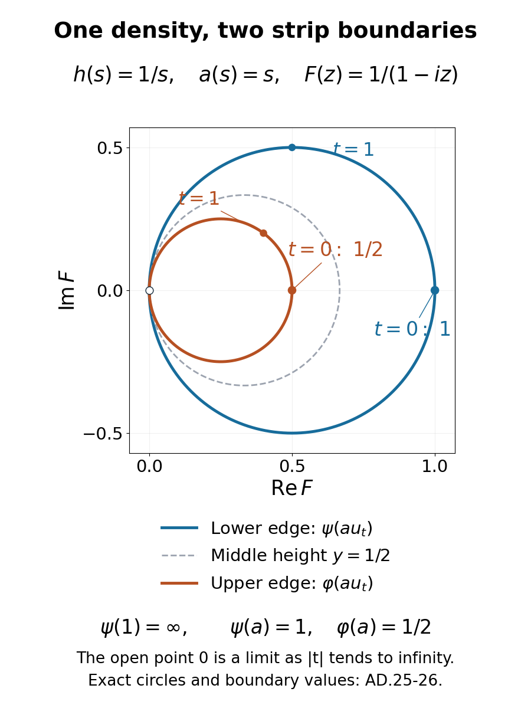

Abelian weights and the relative KMS strip
An integral on a measure space becomes a weight on an algebra of equivalence classes. The null sets matter first. Semifiniteness then determines whether its density is finite almost everywhere. The imaginary powers of a faithful density encode the same information in two boundary values of a holomorphic function.
Throughout, \((X,\Sigma,\mu)\) is an arbitrary sigma-finite measure space. We impose no standard-Borel, countable-generation, Hilbert-space separability or separable-predual hypothesis. Passing to the completion changes none of the equivalence classes below. The zero measure gives the zero algebra; all assertions then have their evident empty interpretation. In the proofs involving a state, assume \(\mu\ne0\).
The written inputs are scalar integration and convergence, scalar L2 completeness, SS1, the Hilbert projection/Riesz theorem, the finite density proof DC-05, the weight constructions WG-006–008, the weight Hilbert-algebra construction, modular fundamental theorem, spectral powers, and GC-07. The last is used only for uniqueness of the relative KMS group. No spectral disintegration is used.
The multiplication algebra and normal integral weights
Let \(\mathcal B\) be the bounded measurable complex functions with the ordinary supremum norm, and let \(\mathcal N\) be the functions zero almost everywhere. Uniform limits show that \(\mathcal B\) is complete and that \(\mathcal N\) is a closed star ideal. The quotient norm is \[ \|[f]\|=\mathop{\rm ess\,sup}|f|. \tag{AD.1} \] Indeed any representative has supremum at least the essential supremum. If the latter is \(c\), the union of the null sets \(\{|f|>c+1/n\}\) is null; replacing \(f\) by zero there gives a representative bounded by \(c\). Pointwise multiplication and conjugation give the C-star identity. Write \(M=L^\infty(X,\mu)=\mathcal B/\mathcal N\).
Faithful maximal-abelian representation. On \(H=L^2(\mu)\), let \(M_f\xi=f\xi\). The estimate \(\|M_f\|\leq\|f\|_\infty\) follows by integration. If \(c<\|f\|_\infty\), some positive finite-measure subset \(E\) of \(\{|f|>c\}\) exists by sigma-finiteness, and \(\|M_f1_E\|_2\geq c\|1_E\|_2\). Hence this representation is isometric and faithful.
Choose a measurable partition \(X=\bigsqcup_{n\geq1}E_n\) with \(\mu(E_n)<\infty\), and put \[ g=\sum_{n\geq1}\frac{2^{-n}}{\sqrt{1+\mu(E_n)}}1_{E_n}. \tag{AD.2} \] Then \(g>0\) almost everywhere and \(g\in L^2(\mu)\). The vector \(g\) is cyclic for the multiplication algebra. For \(\xi\in L^2(\mu)\), the functions \(a_n=(\xi/g)1_{\{|\xi/g|\leq n\}}\) are bounded and \(a_ng\to\xi\) in \(L^2\), by scalar dominated convergence.
If \(T\) commutes with every multiplier, put \(k=Tg\). For every measurable \(E\), \[ \|1_Ek\|_2=\|T(1_Eg)\|_2\leq\|T\|\|1_Eg\|_2. \tag{AD.3} \] Testing the sets where \(|k|>\|T\|g\) gives \(|k|\leq\|T\|g\) almost everywhere. Thus \(f=k/g\) is essentially bounded. On the dense set of vectors \(ag\), \(T(ag)=aTg=M_f(ag)\); hence \(T=M_f\). The multiplication algebra equals its commutant and is therefore a von Neumann algebra. This proof does not need a countable family generating \(\Sigma\).
The reference integral. Define \(\varphi(a)=\int a\,d\mu\) for \(a\in M_+\). For the partition above, \[ \varphi(a)=\sum_{n\geq1}\langle M_a1_{E_n},1_{E_n}\rangle . \tag{AD.4} \] Every summand is a normal positive vector functional. For a bounded increasing net \(a_i\uparrow a\), interchange the two suprema over \(i\) and over finite partial sums. This proves normality, including infinite values. Faithfulness follows from the integral of a nonnegative function. The projections of finite unions of the \(E_n\) have finite weight and increase strongly to one. WG-008 proves semifiniteness. Also \[ \omega(a)=\|g\|_2^{-2}\langle M_ag,g\rangle \tag{AD.5} \] is a faithful normal state. Its existence has been proved from sigma-finiteness, not from separability of a predual.
Which other measures descend? Let \(\nu\) be a positive countably additive measure on \((X,\Sigma)\), with infinite values allowed. The formula \[ \psi_\nu(a)=\int a\,d\nu,\qquad a\in M_+, \tag{AD.6} \] is well defined on \(\mu\)-equivalence classes if and only if \(\nu\ll\mu\). Necessity follows by testing indicators of \(\mu\)-null sets. For sufficiency, functions equal \(\mu\)-almost everywhere are also equal \(\nu\)-almost everywhere; positive simple approximation proves additivity and positive homogeneity on \(M_+\).
Such an integral weight is normal even before a density has been constructed. To check this without an arbitrary-net dominated-convergence argument, let \(0\leq a_i\uparrow a\) be a bounded increasing net. Normality of \(\omega\) permits a sequence of indices \(i_n\), chosen increasing using directedness, such that \(\omega(a-a_{i_n})<2^{-n}\). If \(b=\sup_n a_{i_n}\), then \(0\leq\omega(a-b)\leq2^{-n}\) for every \(n\); faithfulness gives \(b=a\). For this countable sequence choose representatives increasing outside one common null set. Its pointwise supremum represents \(a\): scalar dominated convergence on each \(L^2\) vector identifies its multiplication operator with the strong supremum. Absolute continuity transfers the exceptional null set to \(\nu\), and ordinary monotone convergence gives \[ \psi_\nu(a)=\sup_n\psi_\nu(a_{i_n}) =\sup_i\psi_\nu(a_i). \tag{AD.7} \] The last equality uses \(a_{i_n}\leq a\) and the fact that these are members of the original net. No sequence is asserted to be cofinal in its directed index set.
Conversely, every normal weight \(\psi\) on \(M\) defines a countably additive measure \[ \nu_\psi(E)=\psi(1_E),\qquad \nu_\psi\ll\mu. \tag{AD.8} \] For disjoint sets, their finite sums of indicators increase to the union indicator; additivity and normality give countable additivity. Increasing simple approximation then proves \(\psi(a)=\int a\,d\nu_\psi\) on the entire positive cone.
Finite and infinite densities, with the exact semifiniteness condition
Theorem. Every normal weight on \(L^\infty(X,\mu)\) has a unique density \(h:X\to[0,\infty]\), modulo \(\mu\)-null sets, such that \[ \psi(a)=\int ah\,d\mu\quad(a\in M_+),\qquad 0\cdot\infty=0. \tag{AD.9} \] It is semifinite exactly when \(h<\infty\) almost everywhere. It is faithful exactly when \(h>0\) almost everywhere. In the semifinite case the measure \(h\mu\) is sigma-finite. In particular a faithful normal semifinite weight has \(0<h<\infty\) almost everywhere.
Proof of existence. Let \(\mathcal Q\) be the projections \(q\in M\) with \(\psi(q)<\infty\). It contains zero and is directed by finite joins: because \(M\) is abelian, \(q\vee r\leq q+r\). Set \(e=\sup\mathcal Q\).
The faithful normal state (AD.5) selects an increasing sequence \(q_n\in\mathcal Q\) with supremum \(e\). To see this, first choose \(p_n\in\mathcal Q\) with \(\omega(e-p_n)<2^{-n}\), using normality on the net of finite-weight projections. Replace \(p_n\) by \(q_n=p_1\vee\cdots\vee p_n\). Then \(\omega(e-q_n)\to0\), so faithfulness identifies their supremum with \(e\). If \(e=0\), take \(q_n=0\).
Choose nested measurable representatives \(F_n\) of \(q_n\); their union represents \(e\). Intersect the \(F_n\) with a countable finite-\(\mu\) exhaustion and disjointize the resulting countable cover. This gives a partition \((B_j)\) of \(e\), up to null sets, on which both \(\mu\) and the measure \(\nu_\psi\) of (AD.8) are finite. On every \(B_j\), the finite density proof DC-05 applies: its hypotheses are just two finite measures and absolute continuity, with no separability assumption. It constructs \(h_j\geq0\), finite almost everywhere, with \(\nu_\psi|_{B_j}=h_j\mu|_{B_j}\). Glue them to a finite measurable \(h\) on \(e\). Countable additivity and monotone convergence prove (AD.9) for all positive \(a\) supported in \(e\).
If \(0\leq a\in M\) has finite weight, every spectral cut \(1_{[1/n,\infty)}(a)\leq n a\) belongs to \(\mathcal Q\). Their supremum is the support of \(a\), so \(a=ae\). Consequently every nonzero positive \(a\) supported in \(1-e\) has infinite weight. Define \(h=\infty\) on that complement. If such an \(a\) is nonzero, it is bounded below by \(1/n\) on a set of positive \(\mu\)-measure for some \(n\); thus \(\int ah\,d\mu=\infty\) as well. Splitting any positive \(a\) into \(ae+a(1-e)\) proves (AD.9) in every case.
Uniqueness, including infinite values. The projection \(e\) is determined by the weight. For any proposed density \(k\), the sets \[ X_m\cap\{k\leq n\},\qquad \mu(X_m)<\infty,\quad X_m\uparrow X, \tag{AD.10} \] have finite weight and cover \(\{k<\infty\}\). Conversely a finite-weight projection cannot meet \(\{k=\infty\}\) in positive \(\mu\)-measure. Thus \(e=1_{\{k<\infty\}}\) in \(M\), fixing the infinite part. On the finite part, intersect the sets (AD.10) for two proposed densities. On the resulting finite-measure pieces both densities are integrable, and equality on every measurable subset forces equality by DC-05's uniqueness argument. These pieces cover \(e\), so the densities agree almost everywhere.
Semifiniteness and faithfulness. Every finite positive element is supported in \(e\). If the finite linear domain is ultraweakly dense, multiplication by \(e\) is the identity on that domain and then on \(M\), hence \(e=1\). Conversely \(e=1\) gives the finite-weight projections \(q_n\uparrow1\), and WG-008 gives semifiniteness. This proves the finite-density equivalence. Faithfulness is equivalent to the zero set of \(h\) being null: one direction tests its indicator; for the other, any nonzero positive \(a\) is positive on a set of positive measure, where \(ah>0\). When \(h<\infty\) almost everywhere, the sets (AD.10) cover modulo null sets and have finite \(h\mu\)-measure, proving sigma-finiteness.
Conversely any measurable extended density defines a normal weight. Put \(h_n=1_{X_n}\min(h,n)\), where \(X_n\uparrow X\) and \(\mu(X_n)<\infty\). Then \[ \int ah\,d\mu=\sup_n\langle M_a\sqrt{h_n},\sqrt{h_n}\rangle . \tag{AD.11} \] The right side is the increasing supremum of normal positive vector functionals. Interchanging suprema proves normality for arbitrary increasing nets. The preceding arguments give its faithfulness and semifiniteness criteria. \(\square\)
Why the qualification matters. On a probability space with nonzero measure, set \(\nu(E)=0\) when \(\mu(E)=0\), and \(\nu(E)=\infty\) otherwise. This is countably additive: a countable union is null precisely when every set in a disjoint family is null. It is absolutely continuous and gives the faithful normal weight that is infinite on every nonzero positive element. Its density is \(h=\infty\); it has no finite-valued density and is not semifinite. Thus absolute continuity alone must not be used to assert a finite density. The unrestricted assertion uses extended densities; the finite-density assertion uses semifiniteness.
The abstract abelian assertion has no sigma-finiteness restriction. If \(A\) is an arbitrary abelian von Neumann algebra and \(\phi\) a faithful normal semifinite weight, then \(\phi\) is a trace: \(x^*x=xx^*\) gives its defining trace equality, including infinite values. For any normal semifinite weight \(\theta\), the already proved PT-08 therefore applies with exactly these hypotheses. It supplies a unique positive self-adjoint operator \(H\) affiliated with \(A\) such that \[ \theta(b)=\sup_{\varepsilon>0} \phi(H_\varepsilon^{1/2}bH_\varepsilon^{1/2}),\qquad H_\varepsilon=H(1+\varepsilon H)^{-1},\quad b\in A_+, \tag{AD.12} \] and \(s(H)=s(\theta)\). Since \(A\) is abelian, the bounded regularizations commute with \(b\). This is the full abstract density assertion, including algebras with no faithful normal state. AD-01–02 identify its scalar form on the sigma-finite measure space; they do not impose that model as a hypothesis of PT-08.
The density is equivalent to a normalized relative KMS group
Assume now \(0<h<\infty\) almost everywhere, and put \(\nu=h\mu\), \(\psi=\psi_\nu\). Define \[ u_t=h^{it}=\exp(it\log h),\qquad t\in\mathbb R. \tag{AD.13} \] These are unitaries in \(M\), \(u_0=1\), and \(u_{s+t}=u_su_t\). For every \(\xi\in L^2(\mu)\), scalar dominated convergence applied to \(|u_t-u_s|^2|\xi|^2\leq4|\xi|^2\) proves strong continuity; the same calculation applies to adjoints. More intrinsically, (AD.9) represents every normal positive functional by an integrable density, so it proves sigma-strong* continuity too.
Let \[ \mathcal D=L^\infty(\mu)\cap L^1(\mu)\cap L^1(\nu). \tag{AD.14} \] For \(a\in\mathcal D\) define, on \(0\leq\operatorname{Im}z\leq1\), \[ F_a(z)=\int_X a h^{\,1+iz}\,d\mu . \tag{AD.15} \] Writing \(z=t+iy\) gives \(|h^{1+iz}|=h^{1-y}\leq1+h\). Thus the integral exists, is globally bounded by \(\|a\|_{L^1(\mu)}+\|a\|_{L^1(\nu)}\), and is continuous on the closed strip by dominated convergence. It is holomorphic inside: on \(\varepsilon\leq y\leq1-\varepsilon\), the derivative factor satisfies \[ h^{1-y}|\log h|\leq C_\varepsilon(1+h). \tag{AD.16} \] For \(h\leq1\), bound \(h^\varepsilon|\log h|\); for \(h\geq1\), bound \(h^{-\varepsilon}\log h\) and multiply by \(h\). This gives the required integrable majorant for local complex difference quotients. The boundary values are exactly \[ F_a(t)=\psi(au_t),\qquad F_a(t+i)=\varphi(au_t). \tag{AD.17} \] The weights here are their finite complex extensions. There is no integrability requirement on \(u_t\) alone, and neither weight is assumed finite at one. MA-08's strip uniqueness makes \(F_a\) unique.
Uniqueness of the group. Suppose a unitary group \(v_t\) in \(M\), with its group law and \(v_0=1\), satisfies (AD.17) for every \(a\in\mathcal D\), with bounded continuous holomorphic strip functions. Continuity of the group need not be separately imposed.
Indeed choose finite-\(\mu\) sets \(X_n\uparrow X\), and let \(A_n=X_n\cap\{1/n\leq h\leq n\}\). For \(r\in L^1(\mu)\), put \(r_n=r1_{A_n}1_{\{|r|\leq n\}}\) and \(a_n=r_n/h\). Then \(a_n\in\mathcal D\), and the lower boundary in (AD.17) proves continuity of \[ t\longmapsto\int r_n v_t\,d\mu=\psi(a_nv_t). \tag{AD.18} \] Because \(|v_t|=1\) and \(\|r-r_n\|_1\to0\), convergence to \(\int r v_t\,d\mu\) is uniform in \(t\). Every such coefficient is continuous. For any normal positive functional \(\rho\), its density is integrable by (AD.9), so \[ \rho(|v_t-v_s|^2) =2\rho(1)-2\operatorname{Re}\rho(v_s^*v_t)\longrightarrow0 . \tag{AD.19} \] Apply (AD.18) to its density times the bounded function \(v_s^*\). The analogous adjoint expression gives sigma-strong* continuity.
Both modular groups \(\sigma^\varphi\) and \(\sigma^\psi\) are the identity. Here this can be checked directly in the weight GNS model. For either sigma-finite measure \(\lambda=\mu,\nu\), the bounded square-integrable functions are dense in \(L^2(\lambda)\), by finite-measure and modulus cutoffs. The map \(\Lambda(a)=a\) gives the GNS representation by multiplication. Its involution \(a\mapsto\overline a\) is the restriction of the everywhere-defined antiunitary conjugation on \(L^2(\lambda)\). Its closure is that conjugation and its modular operator is \(1\). The previously proved modular construction therefore gives the identity automorphism group.
To apply the already written uniqueness theorem GC-07, exchange its weight labels: its first weight is the present \(\psi\), and its second is the present \(\varphi\). Its mixed ideal is \[ I=L^\infty(\mu)\cap L^2(\mu)\cap L^2(\nu). \tag{AD.20} \] Multiplication by \(v_t\) maps \(I\) onto itself, since \(|v_t|=1\). The group law is precisely the cocycle law for the identity modular group, and modular intertwining is automatic in an abelian algebra. For \(x,y\in I\), scalar Cauchy–Schwarz for each measure gives \(xy\in\mathcal D\). Its strip (AD.17) has the two boundaries required in GC.17, with the exchanged labels. Every normalization, finite-domain, continuity and intertwining hypothesis of GC-07 is therefore satisfied. That theorem gives \(v_t=u_t\) for every real \(t\).
This also makes the strip characterization equivalent to the density identity, rather than merely a consequence of it. For any faithful normal semifinite \(\psi\), AD-02 first gives its density \(k\). If the powers of another positive finite function \(h\) satisfy (AD.17) for that same weight and common domain, the uniqueness just proved gives \(h^{it}=k^{it}\). Use \(t=1/n\) for all positive integers, outside one common null set. The real number \(\log h-\log k\) then has its quotient by every \(n\) in \(2\pi\mathbb Z\); taking \(n\) large forces it to be zero. Hence \(h=k\) almost everywhere.
Normalization cannot be dropped: for equal weights, every constant phase family \(v_t=c\), \(|c|=1\), satisfies the two scalar boundary identities with a constant strip function. Only \(c=1\) has the group law and \(v_0=1\). If \(\psi\) is not faithful, perform this construction on its support \(p=1_{\{h>0\}}\). The powers are unitaries in \(pM\), whose identity is \(p\). The full-algebra strip identity cannot be asserted unchanged on \(1-p\), where the upper reference weight may be nonzero.
The strip on an arbitrary abelian algebra. Retain the abstract notation of (AD.12), and now assume that \(\theta\) is faithful. Then \(s(H)=1\), and spectral calculus gives the sigma-strong* continuous unitary group \(H^{it}\). For \(a\in A\) with \(\phi(|a|)+\theta(|a|)<\infty\), define the finite complex measure \[ \kappa_a(E)=\phi(a\,1_E(H)),\qquad E\subseteq[0,\infty)\text{ Borel}. \tag{AD.21} \] Here \(b\mapsto\phi(ab)\) is a bounded normal functional: for \(a=w|a|\), it is the GNS coefficient \(\phi(|a|^{1/2}b w|a|^{1/2})\); WG's normal representation and Cauchy–Schwarz give boundedness and normality. Commutativity is used in this identity. Finite partitions of \(E\), together with \(|\phi(a1_E(H))|\leq\phi(|a|1_E(H))\), show that the total variation of \(\kappa_a\) is dominated by the positive measure \(\kappa_{|a|}\). Moreover (AD.12) and scalar monotone convergence give \[ \int\lambda\,d\kappa_{|a|}(\lambda)=\theta(|a|),\qquad \kappa_{|a|}(\{0\})=0. \tag{AD.22} \] Thus \[ G_a(z)=\int_{(0,\infty)}\lambda^{1+iz}\,d\kappa_a(\lambda) \tag{AD.23} \] is bounded and continuous on the closed strip and holomorphic inside, by precisely the scalar bounds in (AD.15–16). Its upper boundary is \(\phi(aH^{it})\). For the lower boundary, first use \(H_\varepsilon\) and bounded spectral calculus, and then pass to the limit with domination by \(\lambda\,d\kappa_{|a|}\); the density identity and its finite complex extension give \(\theta(aH^{it})\).
This construction uses a finite scalar spectral measure for each test \(a\), not a sigma-finite representation of the whole algebra. Both modular groups are the identity, since the weights are traces; PT-08's proof establishes this directly from the constant KMS strip and the proved modular uniqueness theorem. Among sigma-strongly continuous unitary groups, uniqueness of \(H^{it}\) follows from GC-07: exchange its weight labels to \((\theta,\phi)\), use their mixed finite-square-integrable ideal, and note that products of two members have finite absolute integral for both weights by Cauchy–Schwarz. Unitary multiplication preserves that ideal, the cocycle law is the ordinary group law, and intertwining is automatic. These are all of that theorem's hypotheses. The abstract assertion therefore retains the full arbitrary-algebra scope.
An infinite weight with an explicit strip
Take \(X=(0,1)\), \(d\mu=ds\), and \(h(s)=s^{-1}\). Then \(\psi(a)=\int_0^1a(s)\,ds/s\) is faithful, normal and semifinite, while \(\psi(1)=\infty\). The projections \(q_n=1_{[1/n,1)}\) satisfy \[ q_n\uparrow1,\qquad \psi(q_n)=\log n,\qquad u_t(s)=s^{-it}. \tag{AD.24} \] The group is strongly continuous but is not continuous in the operator norm: for \(t\ne r\), the variable \(-\log s\) runs over \((0,\infty)\), so \(\|u_t-u_r\|_\infty=2\).
For \(a(s)=s\), both integrals are finite and \[ F_a(z)=\int_0^1s^{-iz}\,ds=\frac1{1-iz},\qquad F_a(t)=\frac1{1-it},\qquad F_a(t+i)=\frac1{2-it}. \tag{AD.25} \] The integral is computed by its antiderivative, since \(\operatorname{Re}(1-iz)=1+\operatorname{Im}z>0\). At \(t=0\), the lower value is \(\psi(a)=1\) and the upper value is \(\varphi(a)=1/2\). For fixed height \(y\), writing \(w=F_a(t+iy)\) gives \[ \left(\operatorname{Re}w-\frac1{2(1+y)}\right)^2 +(\operatorname{Im}w)^2=\frac1{4(1+y)^2}. \tag{AD.26} \] Thus the lower boundary follows the circle of center \(1/2\) and radius \(1/2\); the upper follows the circle of center \(1/4\) and radius \(1/4\). Both approach, but never attain, zero as \(|t|\to\infty\). These formulas display how the imaginary shift removes one power of the density.

Original illustration: OpenAI Codex (AI). The curves are the exact circles in (AD.26), not numerical evidence for the theorem. The grey curve is the intermediate height one half. The open point zero records a limit as the real parameter tends to either infinity. Reproducible source: render-abelian-kms-boundary-circles.py.
Source correspondence
M. Takesaki, Theory of Operator Algebras II, VIII.3, printed pages 106–107, motivates the passage from a scalar density to a relative KMS group. AD-01 proves the quotient, multiplication and integral-weight assertions for the stated arbitrary sigma-finite base. AD-02 separates extended densities from the finite densities supplied by semifiniteness; absolute continuity by itself does not supply the latter. AD-03 proves the two boundary formulas and verifies every hypothesis of the programme's uniqueness theorem. The example and its exact circle equations are additional worked calculations.